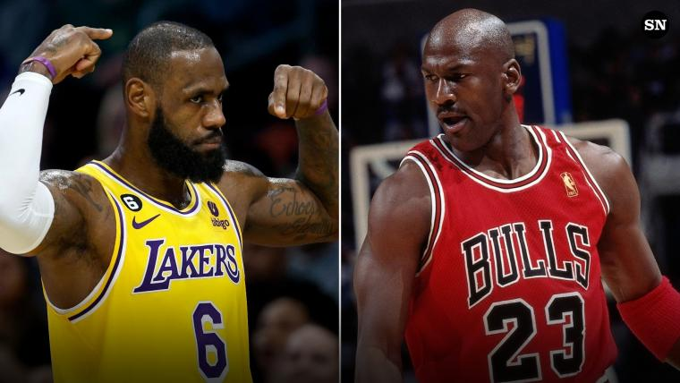

Assignment 4
For a topic that people disagree on, create 2 visualizations that show 2 different results.
Data is an important tool that helps us decide big things. A visualization that is good will get you the information you want as well as teach you what you want to know. However, people know this and may intentionally keep some data away from the viewer in order for a potentially malicious point to be given across to the viewer. For example, COVID cases were a hotly debated topic recently and many people used either uninformed or malicious graphs and charts in order to get intentionally bad points to come across as good point to people who they were debating with. However, COVID talks are boring to me, and I want to talk about something that matters to me more. For me, that's who the GOAT is.
Now, in the NBA, there are many different opinions on who the "GOAT" (Greatest of all Time) is. However, what it gets down to for most people is the two men pictured above: Lebron James or Michael Jordan. Both are incredible basketball players with immense amounts of talent. Both have reasons for why one should be considered better than the other. However, many people try to use poorly made graphics as a quick "gotcha!" moment, when, in reality, both players had some peaks and falls in their career.

As shown by the two graphs above, what you choose to value in terms of a good basketball player is what decides if someone considers you the GOAT or not. I personally believe the 1st graph shows Jordan to be the better player while the second graph shows LeBron as the better player in my opinion. KEEP IN MIND THAT THESE VISUALIZATIONS ARE INTENTIONALLY OUT OF CONTEXT. The data set I found did not include any data past 2018 and did not have playoff stats. Who we choose to believe is the GOAT is not going to be decided by charts, it is going to be decided by the eye test.